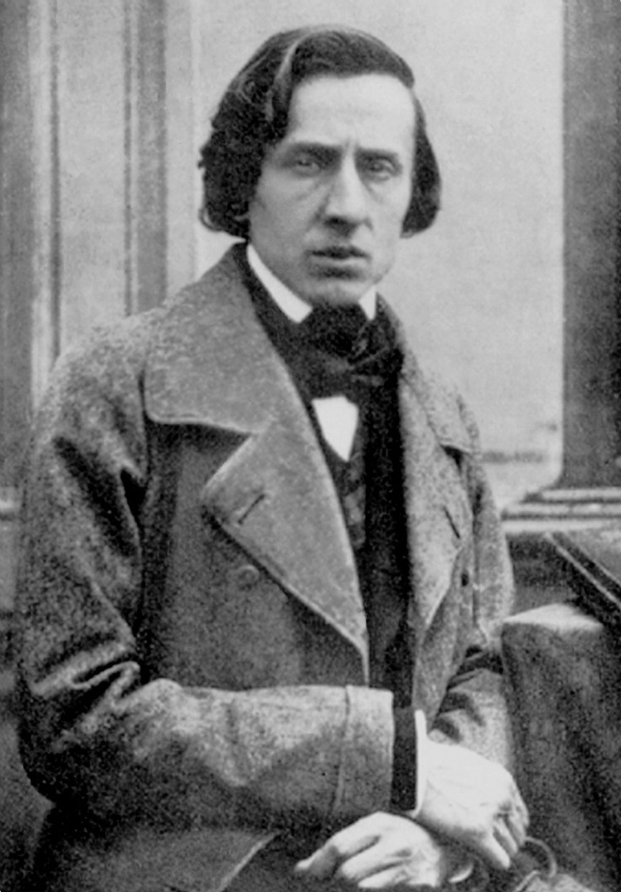

About The Romantic Era
The romantic era of music spanned from around 1830-1900. It's music is known to be passionate with more complex harmonies than in previous eras. Orchestra's became much larger, and while symphonies were still common, new forms of music began to emerge as well. "Lied" was a new form of music that included a singer with piano accompaniment, and was fairly popular with German composers, while more romantic forms of "Ballet" were quite the rage in Russia and France. Some of the most famous composers of this era include Georges Bizet, Camille Saint-Saëns, Gioachino Rossini,Pyotr Ilyich Tchaikovsky, Ludwig van Beethoven, and Frédéric Chopin.
Romantic Composers
Frédéric Chopin
Pyotr Ilyich Tchaikovsky

Ludwig van Beethoven

Click a composer's picture to learn more!